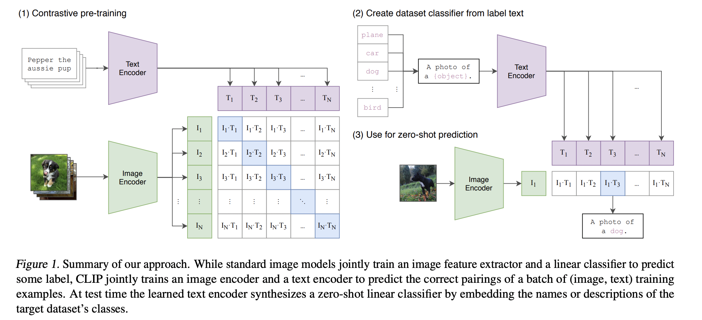

14. 多模态 CLIP 模型
14.1. 框架
{kind=link}
CLIP 的训练数据是 <图像，文本> Pair。如图所示，一个 Batch 有若干张图像，每张图像都配有相应的文字描述信息（Prompt）。
CLIP模型由两个主体部分组成：Text Encoder 和 Image Encoder。这两部分可以分别理解成文本和图像的特征提取器：
Text Encoder：借鉴 GPT-2 的 Transformer 结构。每条 Prompt 在进入Text Encoder 前，都会添加表示开始和结束的符号 [SOS] 与 [EOS]。最终将最后一层 [EOS] 位置的向量作为该 Prompt 的特征表示向量。
Image Encoder：尝试了 5 种不同的 ResNet 架构和 3 种 ViT 架构，最终选用的是“ViT-L/14@336px”这个模型，也就是架构为 Large/Patch_size = 14 的 ViT，同时在预训练结束后，用更高分辨率（336 x 336）的图片做了一个 Epoch 的 Fine-tune 让 CLIP 效果更好。
CLIP 是从头开始训练 Text Encoder 和 Image Encoder，没有借助其它预训练模型。
Note
CLIP 没有用前人已经做好的图文数据集，因为一来这些数据集质量不高，二来数量太少。CLIP 团队自己制作了一个含4亿“图像-文本“对的数据集。他们从 Wikipedia 上取出出现次数在 100 以上的词制作成一个 Query List，每个 Query 有约 2 万个“图像-文本”对。
14.2. Loss
一个大小为 \(N\) 的 Batch，正样本有 \(N\) 对，负样本有 \(N^2 - N\) 对。采用对称 Info NCE 损失。
Loss 分成两部分，考虑了“图片->文字”和“文字->图片”的双向关系：
\(\mathcal{L}_I\) ：对于每一张图片，我们都希望找到和它最相似的文字。
\(\mathcal{L}_T\) ：对于每一段文字，我们都希望找到和它最相似的图片。
温度系数 \(\tau\) 对 Logits 进行了平滑，控制了模型对负样本的区分度。
表征向量 \(\boldsymbol{v}\) 和 \(\boldsymbol{t}\) 都经过 L2 归一化，约束在一个超球面上，有利于训练的稳定和泛化性能。
14.3. Zero-Shot 预测
首先创建一个标签全集，得到每一个标签的特征向量；
取一张图片过 Image Encoder 后得到该图片的特征向量；
计算图片向量和文字向量间的相似度，取相似度最高的文本标签作为预测结果。
CLIP 不用做任何微调，也能实现 Zero-Shot 的图片分类。同时，大规模的数据训练，使得 CLIP 不仅能提炼出不同模态数据中的关键特征，还要真正掌握这些特征之间的相关性，因而对 Train-Test 出现的数据分布偏移（Distribution Shift）具有较好的鲁棒性。
缺点：
文本标签是个闭集，不能预测出没见过的文本。
能做好分类任务，但无法处理更抽象的图像识别任务。
无法做图像-文本的生成式网络。
14.4. 参考资料
CV大模型系列之：多模态经典之作CLIP，探索图文结合的奥秘
CLIP：多模态领域革命者
GPT: Improving Language Understanding by Generative Pre-Training